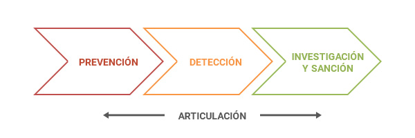

Política contra LA/FT
La Política contra Nacional contra LA/FT establece 16 líneas de acción que debe implementar el Estado a largo plazo para luchar contra el LA/FT.
Se sustenta, principalmente, en la ENR LA/FT (2016); y, engloba las líneas de acción dentro de 4 Ejes:

Eje Estratégico Nº 1: Prevención
Comprende la identificación de los riesgos LA/FT, el funcionamiento del sistema de prevención LA/FT (regulación, supervisión y sanción) y la comunicación adecuada de oeraciones sospechosas a la UIF-Perú.
Eje Estratégico Nº 2: Detección
Agrupa el análisis e investigación administrativa que se realiza para detectar o descartar un caso vinculado al LA/FT, el control administrativo que se debe ejercer para detectar dichos casos y su posterior comunicación a las autoridades competentes.
Eje Estratégico Nº 3: Investigación y Sanción
Comprende la investigación y sanción penal de los delitos de LA/FT, cuya responsabilidad recae en las entidades que integran el sistema de administración de justicia, y que cuenta con la colaboración de otras etidades públicas.
Eje Transversal Nº 4: Articulación
Impacta en todo el sistema nacional de lucha contra el LA/FT y bucsca generar sinergias entre las entidades públicas que forman parte de la prevención, detección, investigación y sanción del LA/FT, la sociedad civil y el secotr privado que juegan un rol en dicho ámbito.
El Objetivo General de la Política Nacional es “Prevenir, detectar, investigar y sancionar de manera eficiente, eficaz y articulada el lavado de activos y el financiamiento del terrorismo para contribuir a la estabilidad económica, política y social en el Perú”.
La Política Nacional contiene 4 Objetivos Específicos-OE, una meta por cada OE, los responsables por cada OE, 16 lineamientos y 18 estándares nacionales de obligatorio cumplimiento.
| Eje Objetivo | Específico (OE) | Lineamientos | Estándares |
|---|---|---|---|
| Prevención | 1 OE | 4 | 4 |
| Detección | 1 OE | 3 | 4 |
| Investigación y sanción | 1 OE | 4 | 5 |
| Articulación | 1 OE | 5 | 5 |
La Política contra LA/FT fue aprobada por D. Supremo N° 018-2017-JUS.